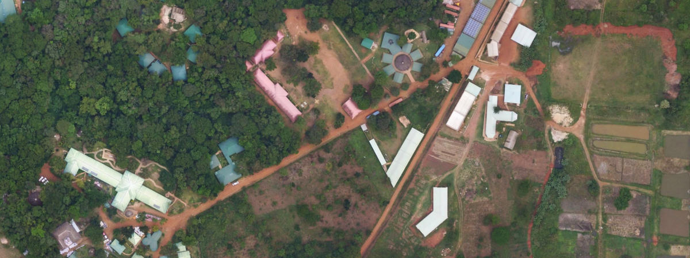

Over ons
Over ons begin en onze toekomst
Over ons begin en onze toekomst
Noah’s Ark Children’s Ministry Uganda (NACMU – Noah’s Ark Kinderbediening Uganda) is een interkerkelijke Christelijke organisatie in Uganda in 1999 opgericht door Piet en Pita Buitendijk. De organisatie bestaat inmiddels uit een kinderhuis, een kleuterschool, een basisschool en een middelbare beroepsopleiding, een medische kliniek en nog veel meer sociale en medische outreach programma’s in de nabije en verre omgeving.
Noah’s Ark richt zich op Uganda’s meest kwetsbare kinderen en de gebieden in de directe omgeving die het meest door armoede zijn getroffen. Door de jaren heen heeft Noah’s Ark het leven van duizenden kinderen en volwassenen beïnvloed. Op dit moment noemen honderden kinderen Noah’s Ark hun thuis, zijn er meer dan 350 leerlingen ingeschreven in onze scholen en heeft onze medische kliniek ontelbaar vele anderen in de omliggende omgeving geholpen.

Piet en Pita met een klein deel van hun kinderen
Piet en Pita zijn begonnen met het opnemen van verlaten en mishandelde kinderen in hun huurhuis in Kampala. Al snel werd het aantal kinderen dat een veilige plaats nodig had zo groot, dat het gebouw te klein werd. Voorbereidingen werden getroffen om naar een grotere compound (omheinde groep huizen) te verhuizen en in 2006 vonden Piet, Pita en hun kinderen hun nieuwe thuis op een groot stuk land net buiten de stad Mukono.
Links: Het huurhuis in Kampala. Rechts: Het kinderhuis in aanbouw
Toen de jongste kinderen ouder werden, besloten we om Family Units (gezinshuizen) te bouwen, zodat we hen een zo normaal mogelijk gezinsleven konden bieden. Onze oudste kinderen zullen zeer binnenkort de leeftijd bereiken waarop ze op eigen benen kunnen staan.
Toen we de New Horizon school stichtten, bestond het slechts uit een basisschool met een kleuteropvang en de lagere klassen, maar vandaag bieden onze New Horizon scholen een volledig onderwijsprogramma vanaf de kleuterschool tot en met het middelbaar beroeps onderwijs. Naast de kinderen uit ons Kinderhuis, worden de klaslokalen gevuld met honderden kinderen uit de omliggende dorpen, waarvan velen uit de meest arme gezinnen komen. Geen van deze gezinnen kon zich het schoolgeld veroorloven, maar hun kinderen zijn toch in staat om naar onze school te gaan dankzij ons sponsorprogramma. De school is met de kinderen meegegroeid en in 2018 heeft de eerste groep studenten van onze middelbare school hun diploma gehaald.
Onze medische kliniek zorgt voor de kinderen, leerlingen en het personeel dat op ons terrein woont, maar ook voor de leden van de gemeenschap om Noah’s Ark. De belangrijkste focus van onze kliniek ligt bij moeders, kinderen en ondervoeding, maar we bieden ook betaalbare, algemene gezondheidszorg van hoge kwaliteit aan.
Door de jaren heen hebben honderden ongewenste, verlaten of mishandelde kinderen een liefdevol thuis gevonden in ons Kinderhuis, waar ze de liefde, zorg en aandacht ontvangen die ieder kind verdient. We zijn er ook in geslaagd om honderden kinderen weer terug te plaatsen in hun eigen families of bij adoptie ouders in Uganda.
Noah's Ark vanuit de lucht
Onze opdracht en ons werk zal niet ophouden. Wij zullen doorgaan om kinderen die een thuis nodig hebben, veiligheid en liefde te bieden. We hopen dat onze kinderen op een dag een eigen gezond gezin zullen stichten en dat ze er in slagen om de armoede, onverschilligheid en het misbruik te doorbreken. Voor onze afgestudeerden van New Horizon hebben we de ambitie dat ze de wereld in zullen gaan, niet om een baan te zoeken, maar om een baan te creëren. Dagelijks werken we aan een betere toekomst voor onze kinderen, onze leerlingen en studenten en voor Uganda. We nodigen u hartelijk uit om deel uit te maken van ons werk. Kijk op deze pagina hoe u kunt helpen.